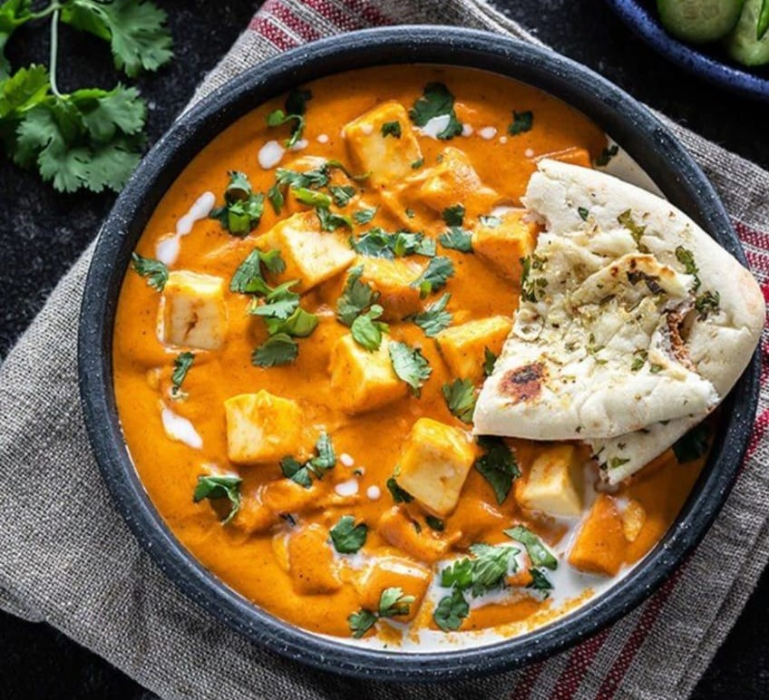

Shahi Paneer
Home
Shahi paneer is a preparation of paneer, native to the Indian subcontinent, consisting of a thick gravy of cream, tomatoes and Indian spices. Originating with the creamy delicacies of Mughlai cuisine (hence the term "shahi", in reference to the royal title of Shahanshah in Mughal India), this dish is prepared by emulsifying tomatoes, onions, ground cashews, clarified butter and cream into a curry, with the addition of paneer cubes and a variety of spices.

Ingredients
Paneer
Onions
Tomatoes
Cashews
Spices
Butter
Heavy Cream
ground spices
salt
sugar
Whole spices
cilantro
Tomato paste
Ginger Garlic
Nutrition Facts
Energy 6kj
Total Fat 0.08g
Cholesterol 0mg
Sodium 998mg(43%)
Total Carbohydrate 0.15g
Vitamin C 0g
Vitamin A 0g
Procedure
Heat 1 teaspoon of oil in a pan on medium heat. Once the oil is hot, add the bay leaf, cinnamon stick, cloves and saute for few seconds. Then add the the onion, garlic, ginger and saute for 2 to 3 minutes until the onion is translucent.
Add the tomatoes and cashews and mix. Then add 1 cup of water.
Cover the pan and cook on medium heat for 15 minutes.
After 15 minutes, remove the pan from heat. Remove the bay leaf, cinnamon stick and cloves.
Let the mixture cool down a bit and then transfer to a blender. It's important to let it cool down a bit else it will all blow up from the mixer.
Grind the masala to a smooth paste and set aside.
To the same pan now add 2 tablespoons butter along with remaining 1 teaspoon oil on medium heat.
Once the butter melts, add the red chili powder and the Kashmiri red chili powder and fry for few seconds. This will give the curry a nice red color.
Then add the ground paste back into the pan along with the garam masala (start with 1/2 teaspoon and add the remaining 1/4 teaspoon at the end only if you feel like the curry needs that extra bit of garam masala), cardamom powder, sugar, salt and tomato paste (if using). Mix well and cook for 1-2 minutes.
Then add the cream and mix.
Add in the paneer and cook for 2 to 3 minutes on medium heat. Finally add crushed kasuri methi
Garnish paneer butter masala with cilantro and serve hot with naan or rice!
Expert Guide
Back ←
Scroll to Top ↑